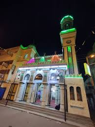

مسجد ابو عبدالله المغربي
Abu Abdullah Al-Maghribi Mosque
مسجد أبو عبدالله المغربي
يقع مسجد أبو عبدالله المغربي بمدينة دمنهور، في شارع أبو عبدالله بمنطقة تاموس، ويُعرف بأنه واحة للذكر والقرآن في محافظة البحيرة.
التاريخ والنشأة
يُعتبر المسجد مركزًا روحانيًا هامًا بالمحافظة، حيث يجتمع فيه المصلون لتلاوة القرآن الكريم وحضور حلقات الذكر النبوي الشريف.
الموقع
يقع المسجد تحديدًا في شارع أبو عبدالله بمنطقة تاموس في مدينة دمنهور، ويتميز بسهولة الوصول له وكونه نقطة تجمع للأنشطة الدينية.
الأنشطة الدينية
يُقام في المسجد مقارئ القرآن الكريم، وحلقات الذكر النبوي الشريف، والتي تجذب أعدادًا كبيرة من المصلين، مما يجعله مركزًا روحيًا وتربويًا مهمًا في المنطقة.